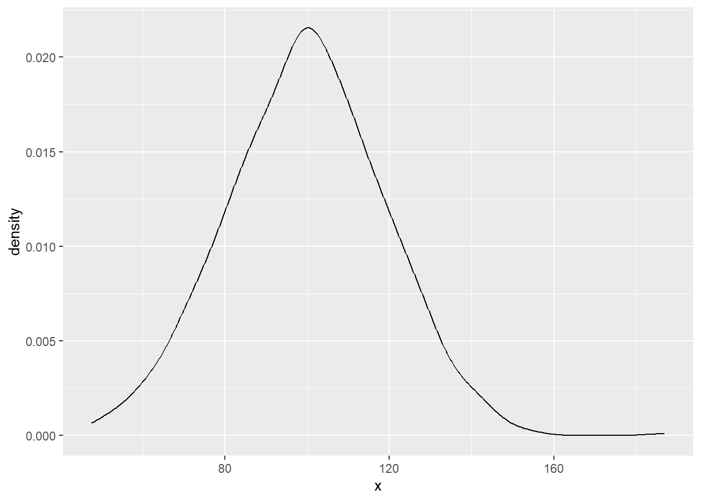
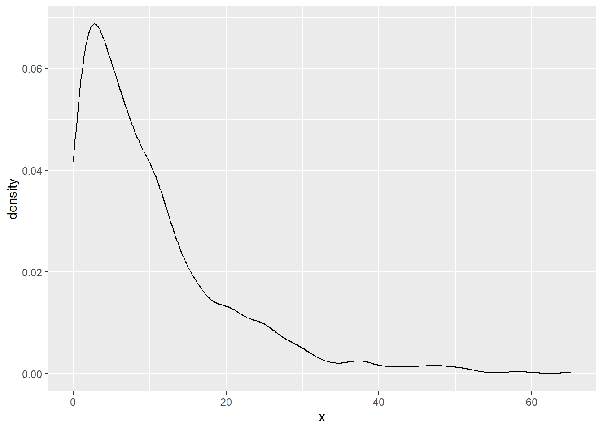
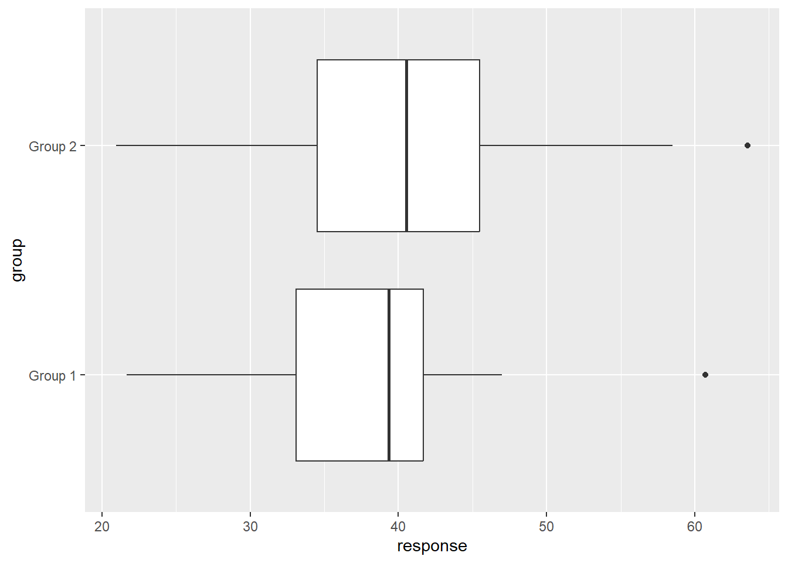

# Initial packages required
library(tidyverse)Simulation
You can download this .qmd file from here. Just hit the Download Raw File button.
This leans on parts of MDSR Chapter 13: Simulation.
Simulation
Simulation (or as MDSR calls it “making up data”) is reasoning in reverse. Rather than start with data and then visualize and analyze to gain understanding, we will start with speculation and create data that fits that speculation. The simulated data then provides insights into our speculated system, and it can also be held up to real data to help us better understand that data.
We will look at several scenarios in which simulation can be valuable and tools that will help us generate useful simulated data.
Simulating behavior under a null hypothesis
While MDSR Section 13.2 has a cool example involving cancer genomics, we will consider a simpler example here.
This applet contains data from a 2005 study on the use of dolphin-facilitated therapy on the treatment of depression. In that study, 10 of the 15 subjects (67%) assigned to dolphin therapy showed improvement, compared to only 3 of the 15 subjects (20%) assigned to the control group. But with such small sample sizes, is this significant evidence that the dolphin group had greater improvement of their depressive symptoms? To answer that question, we can use simulation to conduct a randomization test.
We will simulate behavior in the “null world” where there is no real effect of treatment. In that case, the 13 total improvers would have improved no matter the treatment assigned, and the 17 total non-improvers would have not improved no matter the treatment assigned. So in the “null world”, treatment is a meaningless label that can be just as easily shuffled among subjects without any effect. In that world, the fact we observed a 47 percentage point difference in success rates (67 - 20) was just random luck. But we should ask: how often would we expect a difference as large as 47% by chance, assuming we’re living in the null world where there is no effect of treatment?
You could think about simulating this situation with the following steps:
write code to calculate the difference in success rates in the observed data
write a loop to calculate the differences in success rates from 1000 simulated data sets from the null world. Store those 1000 simulated differences
calculate how often we found a difference in the null world as large as that found in the observed data. In statistics, when this probability is below .05, we typically reject the null world, and conclude that there is likely a real difference between the two groups (i.e. a “statistically significant” difference)
On Your Own
- Follow the steps above to conduct a randomization test for the difference in two proportions. In addition to finding your probability in (3), plot the 1000 simulated differences and indicate where the observed difference of .47 falls in that “null distribution”.
The code below generates a tibble with our observed data. Notice how the sample() function can be used to shuffle the treatments among the 30 subjects.
dolphin_data <- tibble(treatment = rep(c("Dolphin", "Control"), each = 15),
improve = c(rep("Yes", 10), rep("No", 5),
rep("Yes", 3), rep("No", 12)))
print(dolphin_data, n = Inf)# A tibble: 30 × 2
treatment improve
<chr> <chr>
1 Dolphin Yes
2 Dolphin Yes
3 Dolphin Yes
4 Dolphin Yes
5 Dolphin Yes
6 Dolphin Yes
7 Dolphin Yes
8 Dolphin Yes
9 Dolphin Yes
10 Dolphin Yes
11 Dolphin No
12 Dolphin No
13 Dolphin No
14 Dolphin No
15 Dolphin No
16 Control Yes
17 Control Yes
18 Control Yes
19 Control No
20 Control No
21 Control No
22 Control No
23 Control No
24 Control No
25 Control No
26 Control No
27 Control No
28 Control No
29 Control No
30 Control No sample(dolphin_data$treatment) [1] "Dolphin" "Dolphin" "Control" "Control" "Dolphin" "Dolphin" "Control"
[8] "Dolphin" "Dolphin" "Control" "Control" "Dolphin" "Control" "Control"
[15] "Dolphin" "Dolphin" "Dolphin" "Control" "Dolphin" "Control" "Dolphin"
[22] "Control" "Dolphin" "Control" "Dolphin" "Control" "Control" "Control"
[29] "Dolphin" "Control"Evaluate conditions for a statistical test
Most statistical tests rely on underlying mathematical conditions so that p-values, confidence intervals, and prediction intervals are valid. It’s important to know how robust tests are to these conditions - will they still perform well even with small or medium sized violations of the conditions?
Here we will focus on the two-sample t-test, which tests whether or not two independent groups have a significant difference in their means. The key mathematical conditions for this test are:
- independence between and within groups
- data is normally distributed within each group
- data has equal spread within each group (this condition is relaxed when we use the Welch approximation)
And, how important these conditions are can further depend on:
- actual and relative sample sizes within each group
- actual and relative spreads within each group
- actual and relative shape of data within each group
Let’s set up a simulation to generate responses from two independent groups, and then we’ll see how certain conditions might affect our ability to test mean differences between those groups.
We will need to use randomizing functions: functions in R that generate random values from specific probability distributions. We will always have to specify parameters for the distribution, since each distribution family can take on different shapes depending on the parameter settings. For instance, normal distributions are defined by their mean and standard deviation.
# rnorm() produces random values from a normal distribution
normal_data <- tibble(x = rnorm(1000, mean = 100, sd = 20))
normal_data |>
summarise(mean = mean(x),
sd = sd(x))# A tibble: 1 × 2
mean sd
<dbl> <dbl>
1 99.7 20.4ggplot(normal_data, aes(x = x)) +
geom_density()
# rexp() produces random values from an exponential distribution
exp_data <- tibble(x = rexp(1000, rate = .1)) # mean = sd = 1 / rate
exp_data |>
summarise(mean = mean(x),
sd = sd(x))# A tibble: 1 × 2
mean sd
<dbl> <dbl>
1 10.2 10.2ggplot(exp_data, aes(x = x)) +
geom_density()
# help("Distributions") for other shapesHere’s a simulation to examine the coverage of 95% confidence intervals. When we find a 95% confidence interval for the true difference between two means, mathematical theory tells us that our interval should be “correct” 95% of the time. That is, in 95% of repeated applications (or samplings), the reported confidence intervals should contain the true mean difference from the entire population of interest. That’s pretty powerful stuff! But if conditions are violated, are we still justified in declaring 95% confidence in our results?
Often we set var.equal = FALSE to use the Welch approximation which doesn’t require equal spread in the two groups (that’s actually the default in t.test()) but mathematical theory (and extensions to the ANOVA F-test) actually is based on equal variances.
# initial settings
mean1 <- 40
mean2 <- 40
truediff <- mean1 - mean2
sd2 <- 10
sd_ratio <- 1
sd1 <- sd_ratio * sd2
n1 <- 10
n2 <- 100
numsims <- 1000
# Try one sampling to see if 95% CI contains the truediff
samp1 <- rnorm(n1, mean1, sd1)
samp2 <- rnorm(n2, mean2, sd2)
result <- t.test(x = samp1, y = samp2, var.equal = TRUE)
lower <- result$conf.int[1]
lower[1] -11.02172upper <- result$conf.int[2]
upper[1] 2.451933contains_truediff <- (lower <= truediff & upper >= truediff)
contains_truediff[1] TRUE# Plot the sampling above
sim_data <- tibble(response = c(samp1, samp2),
group = c(rep("Group 1", n1), rep("Group 2", n2)))
mosaic::favstats(response ~ group, data = sim_data)Registered S3 method overwritten by 'mosaic':
method from
fortify.SpatialPolygonsDataFrame ggplot2 group min Q1 median Q3 max mean sd n
1 Group 1 15.75192 33.13944 35.23895 40.22701 52.95265 34.92081 11.10507 10
2 Group 2 12.90567 32.02120 37.89980 47.22703 63.22504 39.20571 10.16594 100
missing
1 0
2 0ggplot(sim_data, aes(x = response, y = group)) +
geom_boxplot()
# Now repeat 1000 times!
contains_truediff <- vector("logical", numsims)
for (i in 1:numsims) {
samp1 <- rnorm(n1, mean1, sd1)
samp2 <- rnorm(n2, mean2, sd2)
result <- t.test(x = samp1, y = samp2, var.equal = TRUE)
lower <- result$conf.int[1]
upper <- result$conf.int[2]
contains_truediff[i] <- (lower <= truediff & upper >= truediff)
}
coverage <- mean(contains_truediff)
coverage[1] 0.944On Your Own
Use the simulation above to plot many different values of sd_ratio vs confidence interval coverage.
Adapt the simulation above to examine confidence interval width rather than confidence interval coverage.
Examine the effect of non-normal data. Does the effect change depending on the relative sample sizes in each group? Note that, if you use a distribution like
rgamma()orrexp()the parameters are different, but we still want the mean to equal that in the normal distribution.
Find the power of a statistical test
The power of a statistical test is the probability that it rejects the null hypothesis when the null hypothesis is false. In other words, it’s the probability that a statistical test can detect when a true difference exists. The power depends on a number of factors, including:
- sample size
- type I error level
- variability in the data
- size of the true difference
The following steps can be followed to simulate a power calculation
simulate data where is a true difference or effect
run your desired test on the simulated data and record if the null hypothesis was rejected or not (i.e. if the p-value was below .05)
repeat a large number of times and record the total proportion of times that the null hypothesis was rejected - that is the power of the test under those conditions
often we will then repeat (1)-(3) under different conditions - different sizes of the true effect, different amount of variability, different sample sizes, etc.
On Your Own
- Here is a real email I received from a real research physician. My response was formed after running several simulations…
Do you mind if I ask for some statistical guidance? This is probably a pretty straightforward question but I’m struggling with it a bit.
One of our docs wants to conduct a study looking at a biomarker called PARP. The hypothesis is that expression of PARP is correlated with decreased survival in breast cancer. The test will be done on archived tissue and will be read as either positive or negative. The hypothesis is that patients who overexpress PARP will have a response rate to chemotherapy of 10% and that non-expressers will have a response rate of 25%.
The proposed patient population is 220 patients. This is the power analysis:
Sample Size for Response Rate (2-sample comparison, 1-sided, alpha=0.05)
Power = 80
Null Hypothesis (H0) = .05 (Response Rate for Overexpression Group)
Alternative Hypothesis (H1) = .25 (Response Rate for Normal Expression Group)
Sample Size per Group (STPlan) = 35
Sample Size per Group (nQuery) = 39
Power = 85
Null Hypothesis (H0) = .05 (Response Rate for Overexpression Group)
Alternative Hypothesis (H1) = .25 (Response Rate for Normal Expression Group)
Sample Size per Group (STPlan) = 41
Sample Size per Group (nQuery) = 45
Power = 80
Null Hypothesis (H0) = .10 (Response Rate for Overexpression Group)
Alternative Hypothesis (H1) = .25 (Response Rate for Normal Expression Group)
Sample Size per Group (STPlan) = 76
Sample Size per Group (nQuery) = 79
etc. (Many more runs of their power software with different levels of power and different assumptions about HO and H1)
Now the unknown variable is what proportion of tumors will express PARP. From looking at this it appears that he is assuming that the sample size will be equal in each group but in fact, it appears that PARP expression may be present in 80-90% of tumors. Let’s assume that 80% of tumors are expressers and 20% are non-expressers. I’m not crazy in assuming that will have a significant impact on our needed study size to show a p value of 0.05 at 80% power with the above assumptions, am I?
Provide a plot (ideally) or table to answer this physician’s question. Your plot should be based on several simulated power calculations under different assumptions about (a) the percentage of PARP expressers, and (b) the true response rates in both groups.
Note that rbinom(1, size = N, prob = P) will simulate the number of responders in a group with N subjects who each have probability P of responding.